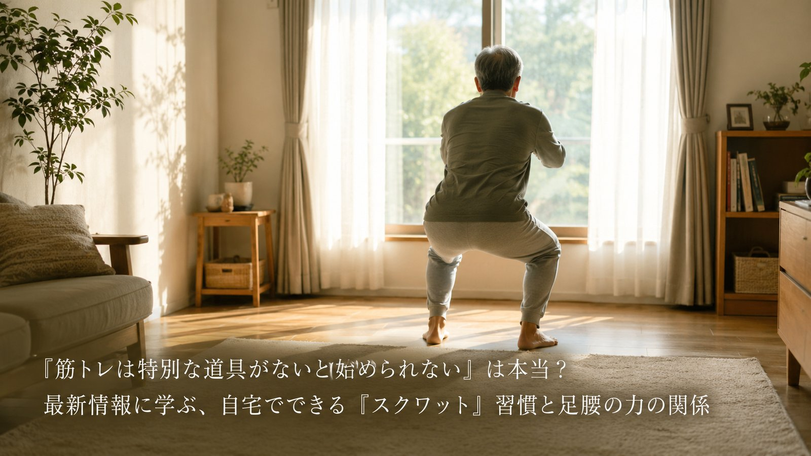

「筋トレは特別な道具がないと始められない」は本当？最新情報に学ぶ、自宅でできる「スクワット」習慣と足腰の力の関係
「筋力トレーニングをしたいけれど、ジムに通ったり器具を揃えたりするのは気が引ける」——そう感じている中高年の方は少なくないのではないでしょうか。2026年6月、スポーツ・フィットネスメディアが、自宅で器具なしに取り組める「スクワット」の動画コンテンツを公開し、注目されました。今回は中高年の方にも分かりやすく、そのポイントをご紹介します。

紹介されている「自宅でできるスクワット習慣」という考え方
- スクワットは自重で行えるトレーニングの代表的な種目で、太ももやお尻など下半身の大きな筋肉を中心に鍛えられると説明されている。下半身の筋肉は歩く力や姿勢を支える土台になるため、加齢とともに衰えやすい部位を意識的に動かすことが役立つとされています。
- 特別な器具や広い場所を必要とせず、自宅で気軽に取り組める点が、運動を続けるハードルを下げると紹介されている。動画を見ながら一緒に取り組む形式は、「ひとりでは最後まで続けられない」という悩みに応える工夫のひとつだと説明されています。
- 運動経験の有無を問わず、初心者から日頃筋力トレーニングに励む人まで幅広い層に役立つ内容として設計されていると述べられている。短時間から少しずつ取り組むことが、運動習慣を身につけるきっかけになるとされています。
中高年の私たちが意識したいこと
この情報が伝えているのは、筋力トレーニングは特別な場所や道具がなければ始められない、ということではなく、自宅にいながら少しずつ取り組める工夫を知ることが、運動習慣を続ける助けになる、という視点です。中高年は下半身の筋力の衰えが歩く力やバランスに影響しやすいともいわれており、日々の生活の中では、次のような一般的に知られている習慣が、足腰の力を保つ助けになるとされています。
- 膝に負担を感じる場合は深くしゃがみ込まず、椅子の背もたれなどを支えにして無理のない範囲で行う
- 動画や音声を活用し、決まった時間に体を動かす習慣を生活の中に取り入れる
- 膝や腰に痛みがある場合は自己流で負荷を上げず、無理をせず医療機関や専門家に相談する
※上記は一般的な運動習慣としてよく紹介される内容であり、特定の症状の改善や治療を保証するものではありません。持病のある方や体調が優れない方は、無理をせず医療機関にご相談ください。
本記事は、スポーツ・フィットネスメディア「MELOS」（運営：株式会社APPY）が2026年6月25日に発表したプレスリリース「ビーチテニス日本代表・増田健吾選手によるトレーニング動画第4弾！増田選手と一緒に『スクワット』チャレンジ」の内容を要約・紹介したものです。詳しい内容は出典元をご確認ください。
出典：MELOS（運営：株式会社APPY） プレスリリース（アットプレス配信、2026年6月25日）
出典：MELOS（運営：株式会社APPY） プレスリリース（アットプレス配信、2026年6月25日）
本記事は健康に関する一般的な情報提供を目的としたものであり、医学的な診断・治療・予防を目的としたものではありません。記載内容は出典元の見解の要約であり、当社（株式会社BISII）独自の見解や、当社が販売する製品の効果を示すものではありません。気になる症状がある場合は、医療機関へご相談ください。
当社では、日々のコンディショニングをサポートする空間電位ケア機器「DENBA Health」をご紹介しています。
DENBA Healthについて見る最終更新日：2026年7月4日